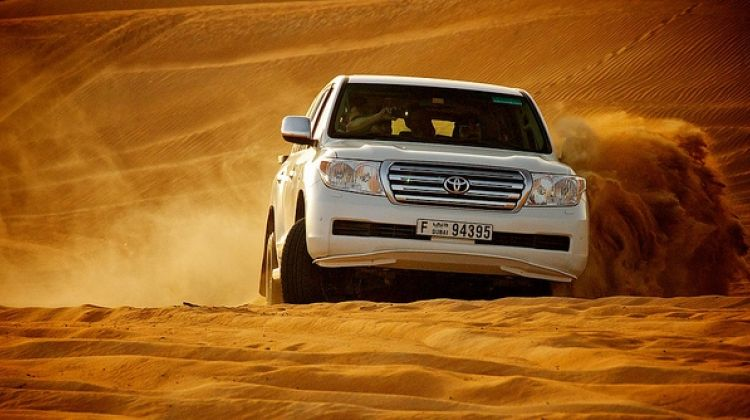

Day 1 – Arrive Dubai – Dhow cruise with dinner
Welcome to your tour of Dubai!!! A land full of surprises Arrive at the international airport. After clearing immigrations and customs you will be transferred to your hotel in Dubai. Check in to your hotel. In the evening enjoy Dhow Cruise with dinner. It's a romantic way of spending an evening while aboard a traditionally decorated wooden dhow (cabin cruise), as it sails along the Dubai creek under the moonlight. The major Dubai landmarks shine through the moonlight sky as the wooden vessel slips silently across the creek. The past and present architecture of the area is brought to its full beauty during this time. Overnight stay at Hotel in Dubai.
Meals: Dinner,lunch
Day 2 – Dubai – City tour and Desert Safari
Enjoy buffet breakfast at the hotel. Today in the morning you will be picked up from your hotel lobby for half day panoramic city tour of Dubai. Dubai is a city that provides a new setting at every turn, richly mixing together the old and the new without a doubt. Visit the Dubai Museum, Burj Al Arab, Jumeirah Mosque, Burj Khalifa and Dubai Mall, among others the leading tourist destination in the Middle Afternoon you will get picked from your hotel for the Desert Safari tour.
The Desert Safari begins early evening with dune bashing, and is followed by barbeque dinner at a traditional Bedouin campsite. See the golden sand dunes of Arabia on 4-wheel drives where you experience the thrill of a life time - roller coaster ride on the sand dunes. While on the journey, you stop on the highest sand dune to view the beautiful sunset for taking some breathtaking photographs and to refresh yourself with a mineral water. Then continue the drive to our Bedouin Campsite, right in the heart of the desert. Henna design, local dresses, soft drinks, water, tea or coffee are available for your enjoyment. Enjoy some camel rides and Hubbly Bubbly (water pipe) in different flavors that suit your taste. Adding to the atmosphere of the night, an enchanting belly dancer performs a fascinating dance to a rhythm of Arabic music. To top it all, the delicious BBQ buffet dinner is served for all the guests.Overnight stay at Hotel in Dubai.
Meals: Breakfast,lunch & Dinner
Day 3 – Dubai- Abu Dhabi city tour
Enjoy breakfast at the hotel. After breakfast transfer to the Abu Dhabi. Abu Dhabi is the capital and the largest of the seven emirates of the United Arab Emirates. It’s one of the richest cities in the Middle East. You will pick-up from the hotel in Dubai and will drive towards the destination for approximately 2 hours. You will halt at Sheikh Zayed Grand Mosque or Sheikh Zayed Mosque, the 3rd largest Mosque in the world and one of the best architectural landmarks of the capital. The mosque also features an exceptional collection of marble works and the largest carpet in the world designed by Iranian artists. Overnight stay at Hotel in Dubai.
Meals: Breakfast,lunch & Dinner
Day 4 – Dubai – Dubai Mall with Burj Khalifa and Dubai Fountain show
Enjoy your breakfast at the hotel. After breakfast proceed towards Dubai Mall to enjoy the spectacular view of Dubai from the tallest tower of the world – Burj Khalifa. Take the elevator to the observatory on the 124th floor of the Burj Khalifa, and witness the beauty of Dubai from the highest peak. Rest of the day free for shopping. Return back to the hotel. Overnight stay at Hotel in Dubai.
Meals: Breakfast,lunch & Dinner
Day 5 – Dubai – Shopping tour of Dubai
Enjoy your breakfast at the hotel. After breakfast check out of the hotel and proceed for a shopping tour of Dubai. We drive and you shop. This tour takes you around to some of the best shopping places like : the Dubai Mall, Mall of Emirates, Ibn Batuta Mall, LuLu Center, etc. Enjoy a complete shopping experience in Dubai. Later proceed to the airport for your flight back home with fond memories.
Meals: Breakfast,lunch & Dinner